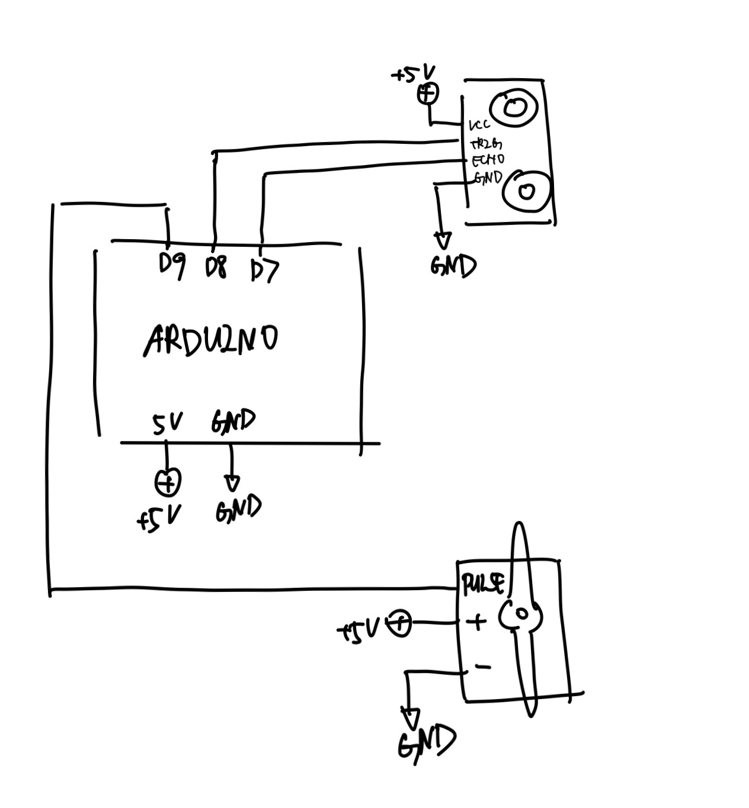

The objective of our project was to create a moving structure that would indicate the state and behavior of a remote person — being present, absent, or walking.
The objective of our project was to create a moving structure that would indicate the state and behavior of a remote person — being present, absent, or walking. If the remote person is close to the sonar sensor, then the person is present. For this state, the servo will move the structure to an “open” position. In other words, a triangle will be visible in the center of the device. If the remote person is outside of the specified range, then the person is absent. The servo will then move the structure to a “closed” position, meaning the popsicle sticks will move to overlap each other, concealing the triangle. When the person is continuously walking, the sticks will mirror this action and continuously move. This particular movement corresponds to the distance the person is away from the sensor. The overall structure is meant to be a wall-mounted decorative piece that conveys a person’s walking behavior and whether they are present or absent from the designated area.
The structure is powered by an arduino with a sonar sensor taking in user input and a hobby servo that further connects to one of the moving popsicle sticks.
